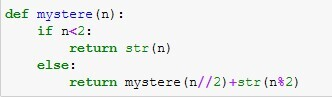

Lorsqu’on effectue une remise de 10% sur un prix, cela revient à multiplier ce prix par la valeur \(1-10/100\).
On veut calculer des baisses successives de 10% sur une valeur, le nombre de remises étant défini à l’avance.
Calculer trois remises successives de 10% sur un prix de 100 €.
Montrer en détaillant le calcul qu’un algorithme récursif peut s’appliquer.
Écrire un script itératif qui calcule \(n\) remises successives de 10% sur un prix. On utilisera les variables prix et n. La variable prix contiendra la valeur finale.
Vérifier votre script avec un prix de 100 pour \(n=3\) remises.
Écrire la fonction récursive remise_successive qui calcule \(n\) remise de 10% sur un prix défini à l’avance.
Les produits précédents sont des factorielles que l’on va noter factorielle(n) où n est un nombre entier.
Quelle relation peut-on écrire entre factorielle(3) et factorielle(2) ?
Quelle relation peut-on écrire entre factorielle(4) et factorielle(3) ?
Pour tout nombre entier \(n\), écrire une relation entre factorielle(n) et factorielle(n-1).
Écrire la fonction récursive factorielle(n) qui prend en paramètre un nombre entier \(n\) et renvoie la valeur de sa factorielle. On admet que factorielle(1) renvoie la valeur 1.
Expliquer quel est le résultat renvoyé par le code suivant:

Écrire une fonction binaire qui prend en paramètres un entier relatif \(r\) et un entier naturel \(n\) strictement positif, et qui renvoie la représentation en machine de \(r\) sur \(n\) bits. La méthode utilisée est celle du complément à \(2\).
Note
Déterminer l’écriture binaire sur \(n\) bits d’un nombre négatif \(r\) revient à déterminer l’écriture binaire du nombre positif \(r+2^{n}\) (méthode du complément à 2)
Exemple de l’écriture binaire du nombre \(-35\) sur 7 bits est \(-35+2^{7}=93=1011101_{2}\).
La fonction fibonacci(n), qui doit son nom au mathématicien Leonardo Fibonacci, est définie récursivement, pout tout entier \(n\), de la manière suivante:
{kind=link}
{kind=link}
{kind=link}
{kind=link}